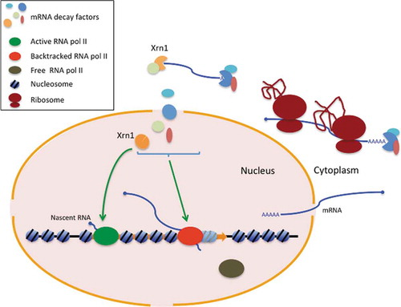

Figure 1:
Figure 1 of the article showing the model of how Xrn1 and other RNA decay factors work. Source: Begley V et al (2020). Xrn1 influence on gene transcription results from the combination of general effects on elongating RNA pol II and gene-specific chromatin configuration. RNA Biology. doi: 10.1080/15476286.2020.1845504.
If you want to know more about it, read my post in BioBit.
The article can be found at:
Begley V et al (2020). Xrn1 influence on gene transcription results from the combination of general effects on elongating RNA pol II and gene-specific chromatin configuration. RNA Biology. doi: 10.1080/15476286.2020.1845504.